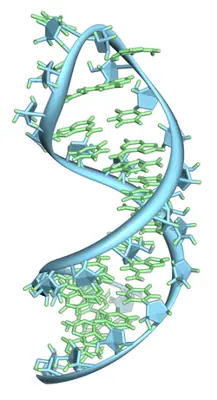
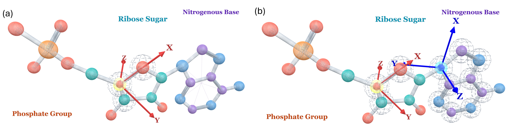

Backbone designability · IF / RhoFold
48.67%
+7.67 percentage points over RNA-FrameFlow.
RNA-FrameFlow
41.00%DuetRNA
48.67%
41.00%DuetRNA
48.67%
Base-and-Sugar Dual-Frame
Flow Matching for RNA Co-Design
Two complementary views of a nucleotide.
One model for its sequence and three-dimensional structure.

Sugar frameRNA structure depends on both the organization of its nucleobases and the geometry of its sugar–phosphate backbone. DuetRNA gives each nucleotide two coupled rigid frames, so that these complementary roles can be learned within a joint sequence–structure generation model.
A base-centered frame describes base-mediated relations. A sugar-centered frame supports local backbone reconstruction.
Both frames evolve from noise, with shared geometric features and supervision of their within-nucleotide relative pose.
Nucleotide identities and local torsions are predicted from the coupled features to complete the RNA heavy-atom structure.
We compared seven frame constructions across 11,497 static RNA chains and 31,432 multi-state relation groups. Base anchoring stabilizes the description of canonical pairing; sugar anchoring preserves the local geometry used by the backbone reconstruction path.

Orientation from the nucleobase plane; origin at the glycosidic nitrogen, N9 or N1. A direct representation of base position and orientation.
A frame at C4′, constructed from O4′, C4′ and C3′. The local reference for torsion-conditioned sugar–phosphate geometry.
Multi-state rotational drift: Sugar-GS → Base-Plane.
Translational drift: 1.70 Å → 0.61 Å.
Base-channel reconstruction RMSD: Sugar-GS → dual frame. The Sugar-GS backbone and bridge channels are retained.
Representation analysis before generative-model training; manuscript Table 1 and Appendix D. Reconstruction values describe the audited decoding paths.
For a chain of N nucleotides, the continuous state lies in (SE(3) × SE(3))N. Each rigid frame has a position and an orientation. Both channels are processed by the same coupled geometric network.

Training pairs linear position interpolation with geodesic rotation interpolation. At inference, endpoint predictions define the updates of both geometric channels.
The predicted base-to-sugar transform is compared with the corresponding transform in the training structure. Its translation and rotation errors supervise both frames.
Sequence and torsion heads read the coupled features. The base frame places nucleotide templates; the sugar frame and torsions reconstruct the backbone.
T denotes a rigid pose. Trel expresses the sugar frame in base-frame coordinates. The output uses atom23: up to 23 heavy-atom slots per nucleotide, with absent atoms masked and hydrogens excluded.
The inverse-folded protocol (IF) uses an external model to design sequences for generated structures. The generated-sequence protocol (GS) folds DuetRNA's own sequence. Each comparison below uses its stated protocol and evaluator.
+7.67 percentage points over RNA-FrameFlow.
+4.33 percentage points over RiboGen.
Validity: scTM ≥ 0.45; 600 samples on the 40–150 nt grid. Manuscript Table 2. The IF gain is statistically significant; the GS difference is numerical (p = 0.119). These are separate pairwise comparisons, not a cross-protocol ranking.
| Representation and coupling | IF validity |
|---|---|
| Full DuetRNA | 48.67% |
| Sugar-GS only | 34.67% |
| Dual frame without relative-pose supervision | 30.00% |
Controlled ablations, manuscript Table 3. Both the base-centered state and its coupling to the sugar frame contribute to the result.
The headline checkpoint is the best of four independent training runs. Mean IF validity across those runs is 45.68% ± 2.33%. DuetRNA also reaches 38.83% GS validity with RhoFold; that figure is separate from the Boltz-1 comparison above. The RiboFlow-grid IF comparison gives 44.33% for DuetRNA.
Direct coordinate analysis finds improved packing and sugar-ring closure relative to the sugar-only ablation. Current work focuses on glycosidic-linkage accuracy, backbone continuity and broader fold coverage. These results measure computational self-consistency and geometry.
Six recorded generation trajectories, spanning 40–140 nucleotides. Select a sample to play its trajectory. Media load only when opened, so you can read the research without running background animations.
Recorded trajectories are model sampling paths.
Colour-reveal clips and rainbow-rendered samples are available in the gallery.
Open one interactive viewer at a time. Drag to rotate; use the viewer controls to inspect the structure. These are the six structure files from the original project site.
@article{Li2026.08.18.745543,
title = {{Base-and-Sugar Dual-Frame Flow Matching for RNA Co-Design}},
author = {Li, Junzhe and Peng, Lijian and Li, Yuhao and Zhou, Yize
and Cao, Hanqun and Tan, Cheng and Liu, Shengchao},
journal = {bioRxiv},
year = {2026},
doi = {10.1101/2026.08.18.745543},
URL = {https://www.biorxiv.org/content/10.1101/2026.08.18.745543}
}